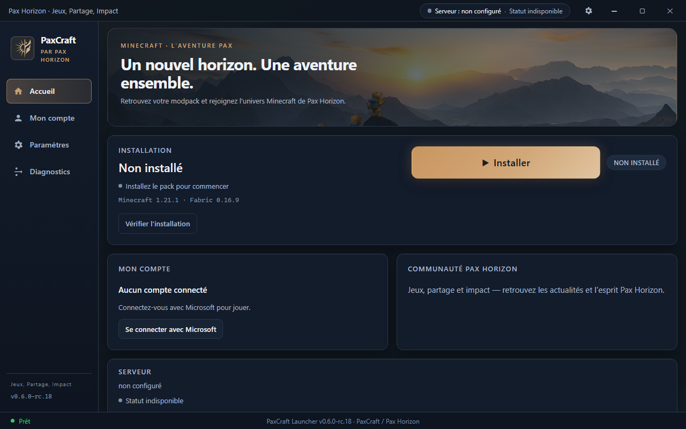
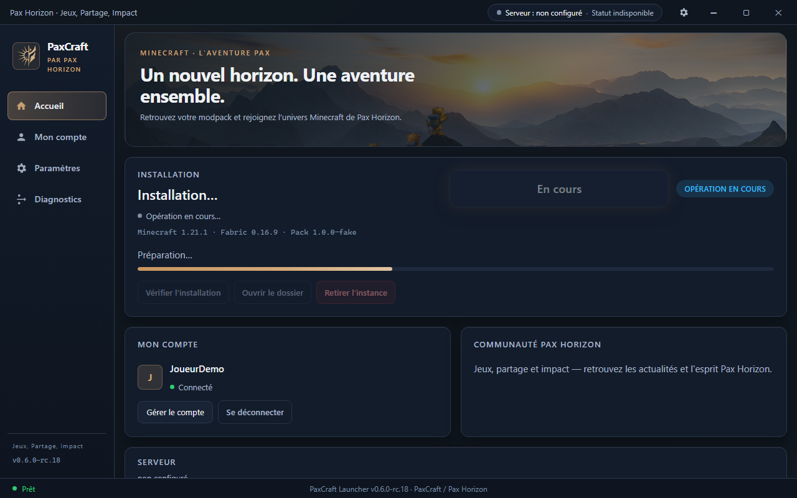
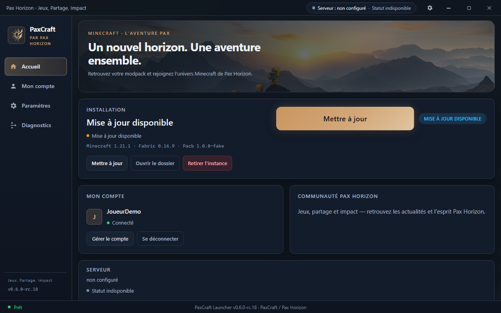
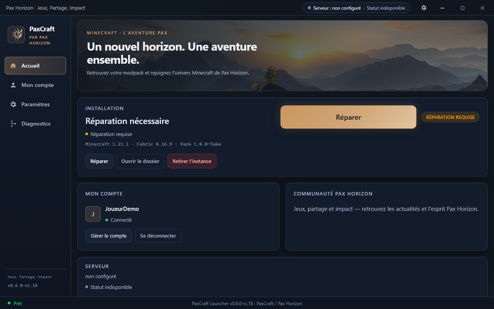
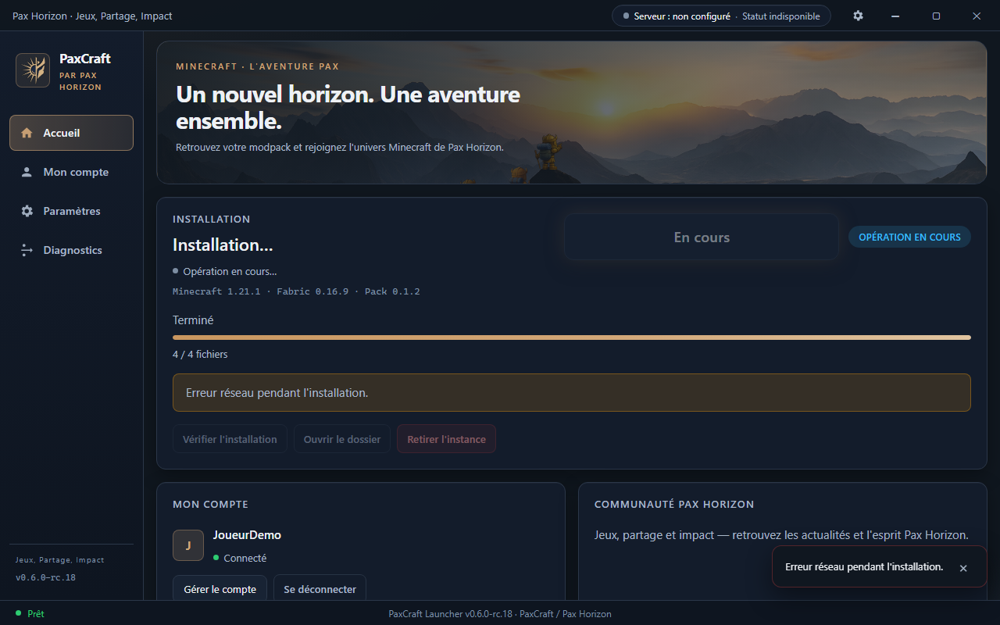
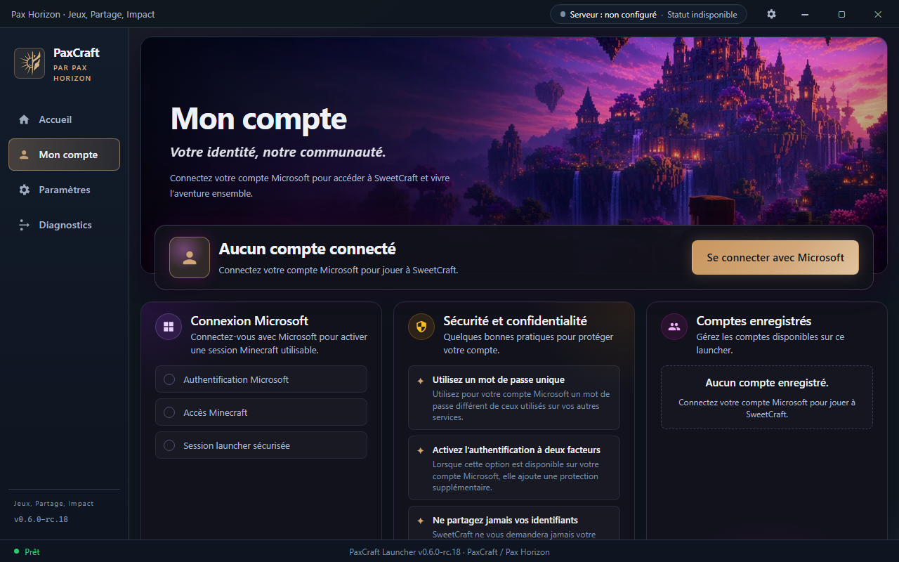
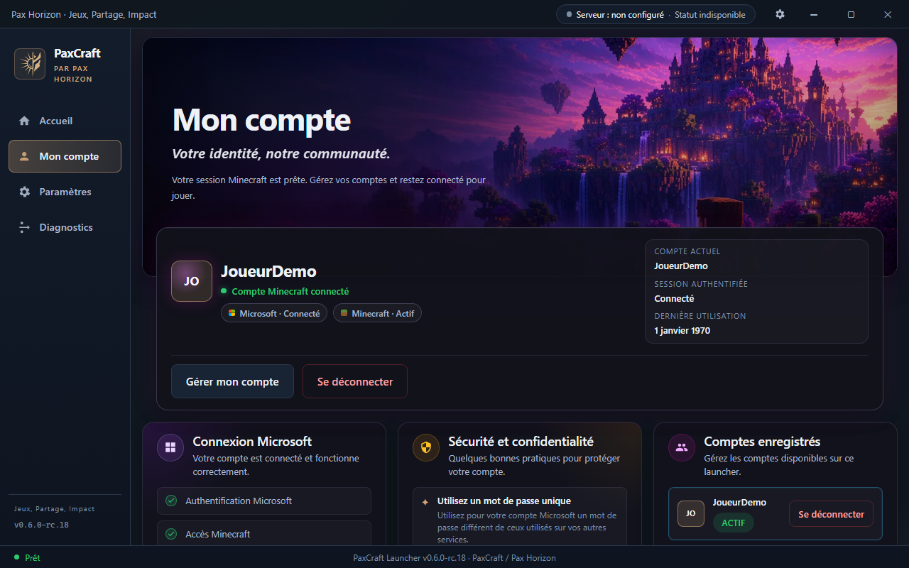
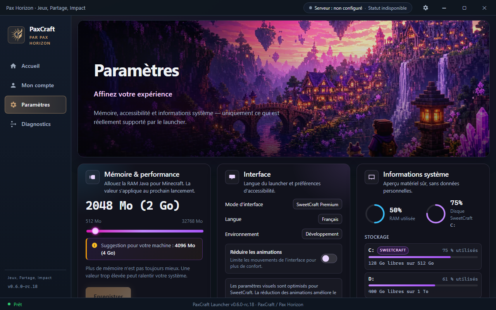
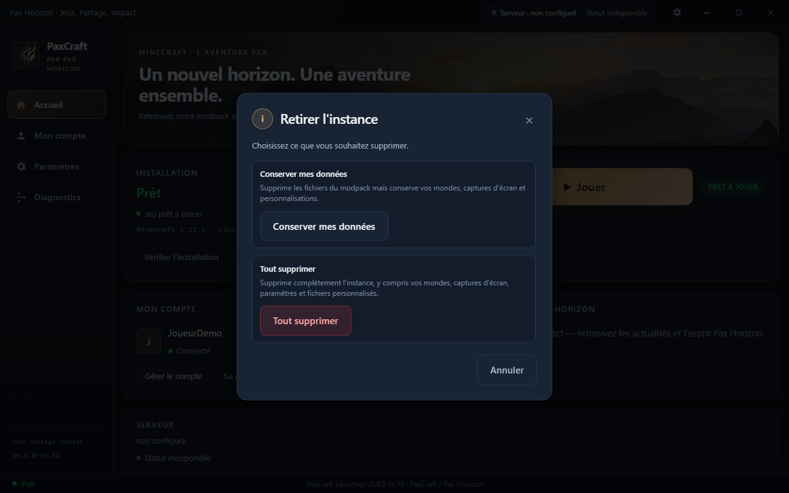
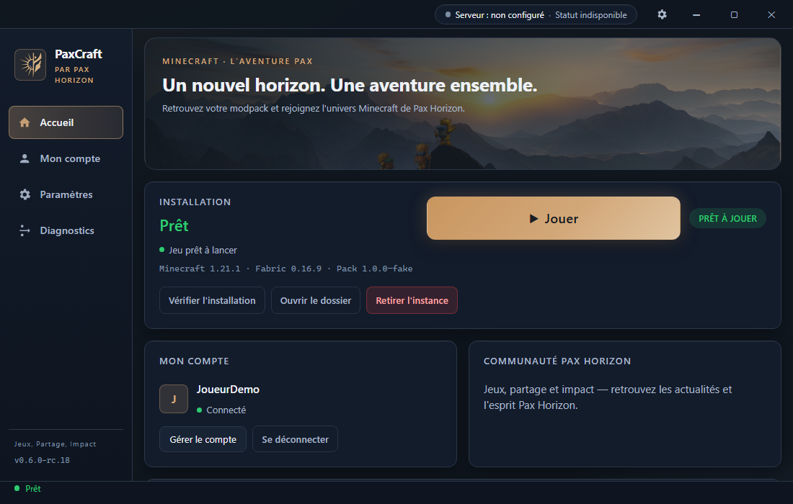

Accueil initial sans pack

Accueil avec pack installé (fixture READY)

Progression installation (fixture BUSY / INSTALLING)

Update disponible (fixture readiness)

Repair requis (fixture)

Erreur d'installation (fixture NETWORK_ERROR + tentative install)

Compte déconnecté

Compte connecté fictif

Paramètres

Serveur non configuré (présentation)

Modal confirmation désinstallation

Viewport réduit 1100×700